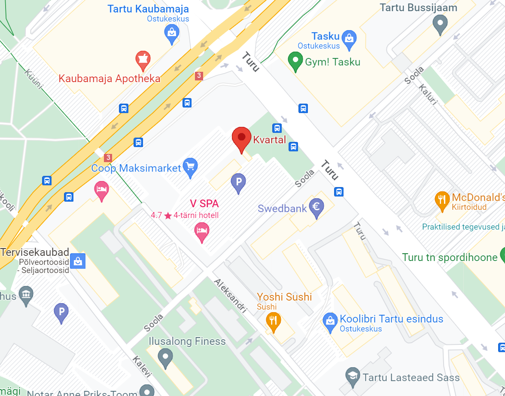

MMR asutasid 2023. aastal Marko, Marcos ja Rainer-i poolt, mis keskendub stiili ja tehnoloogia ühendamisele rõivastes. Oma originaalse kaubamärgi ja arvukate lepinguliste disainiprojektide kaudu on MMR aidanud kaasa uue põlvkonna tehniliste rõivatoodete ja stiilide tekkimisele. MMR pakub jätkuvalt originaalseid ja käsitsi toodetuid rõivaid kogu maailmas.
Tartus loodud firma on koostöötanud mitme suur firamga, et tuua klientidele aina rohkem ja paremat nende raha eest. Tel. nr. +372 1111 1111
Praegu asume Kvartalis esimesel korrusel.
